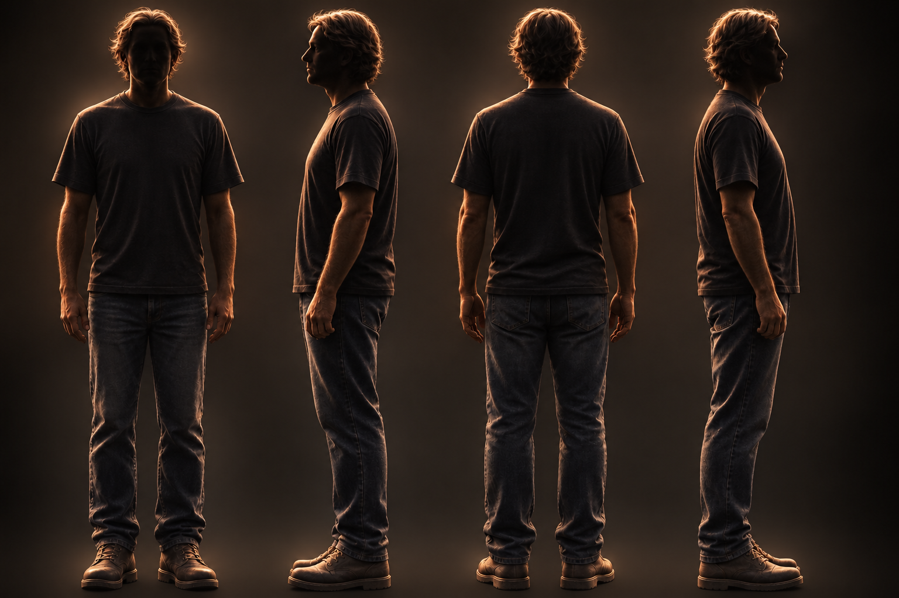
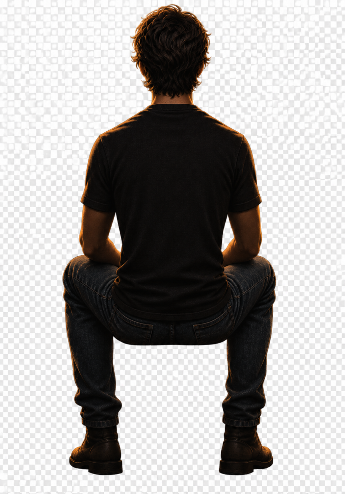
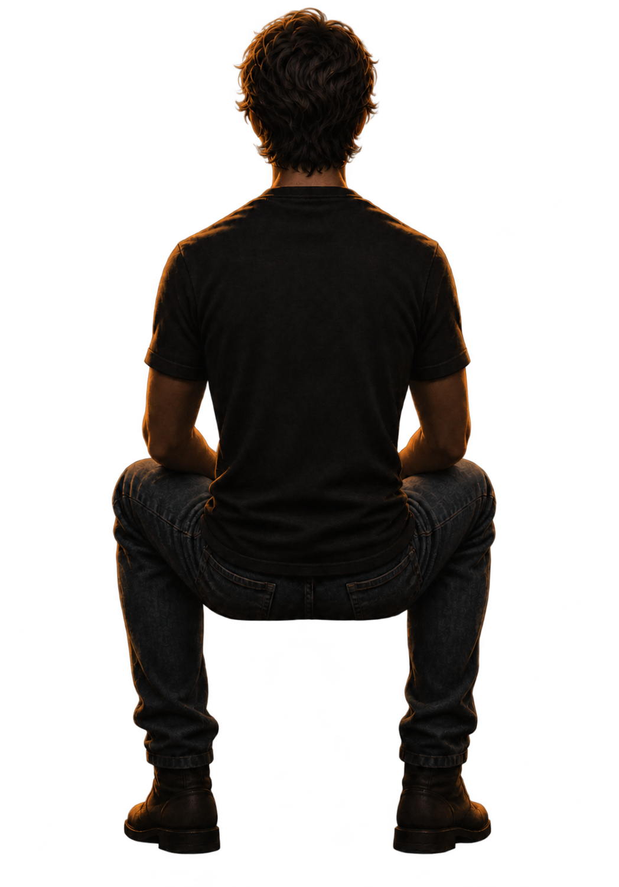

Extraction stopped. No production asset or bench placement approved. The original candidate contains a baked checkerboard. The separate image-tool cutout changes character RGB pixels and makes much of the body slightly translucent. This page shows source evidence; sizes below are for inspection and do not establish consistent character scale.



The source has compatible short sleeves, jeans and boots and broadly similar tousled hair. Bright orange rim lighting remains. A visible lower jeans contour is not proof of the anatomical support point. Seat contact, registered scale, 5% head/shoulder consistency and foreground bench occlusion remain unvalidated.